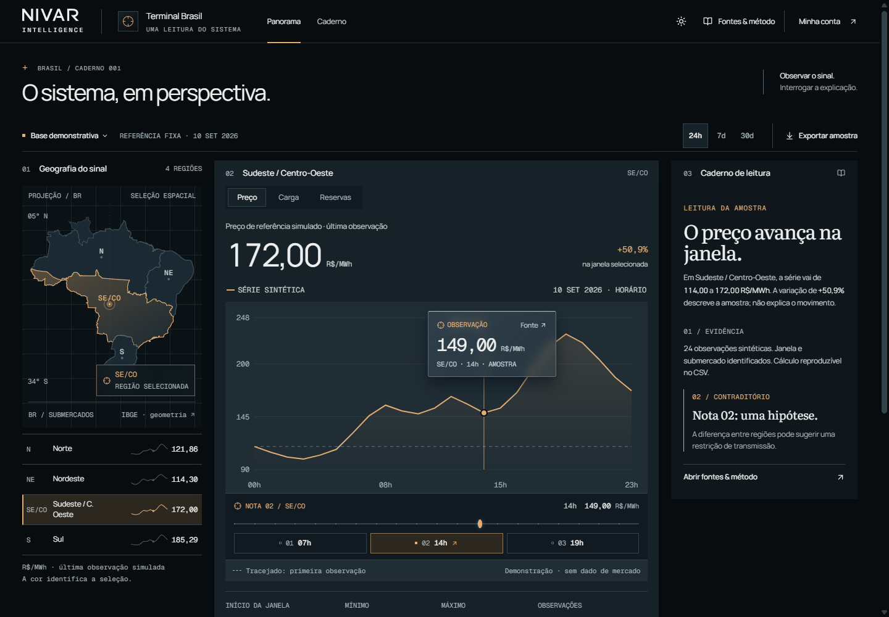
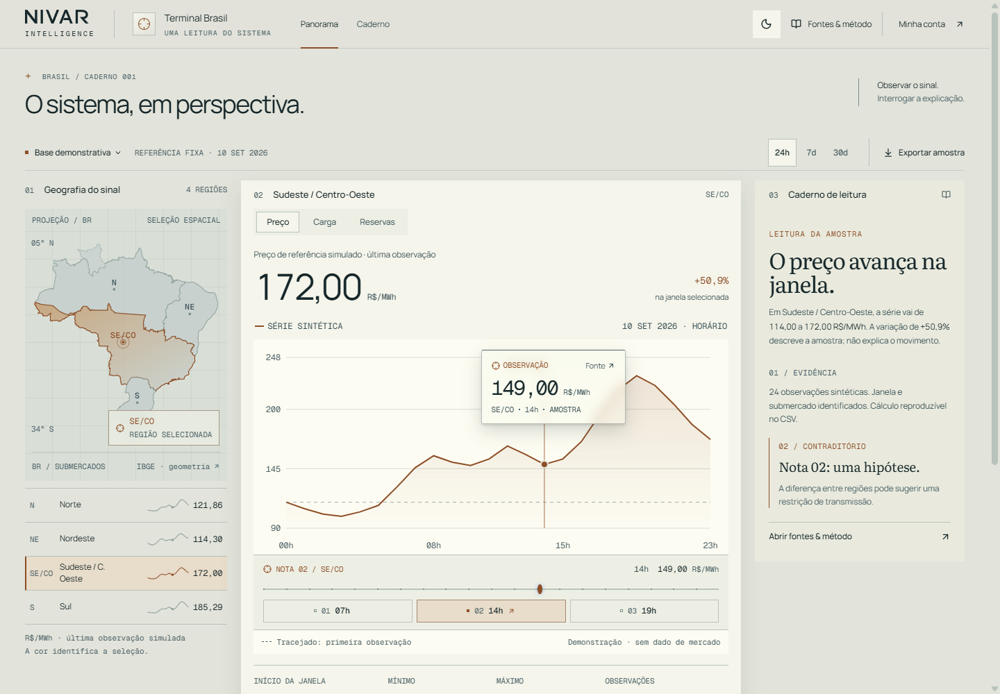
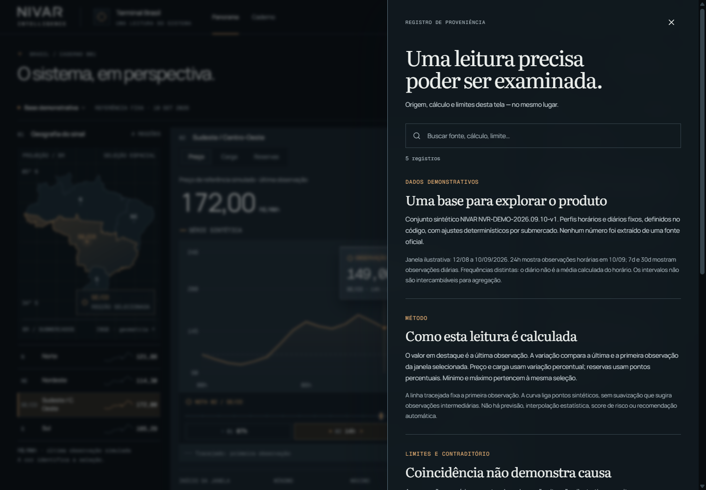

Current native renders after the focused optical correction. Essential operational text reads at 11–12px; the material priority accepted by critic 03 is preserved. Geography recedes, the central graph dominates, and the reading plane stays independent.

01 / CENTRAL GRAPH + GLASS LENSThe brightest sustained plane belongs to the graph; geography and toolbar recede. The inspected point remains visible.

02 / MINERAL FIELDWarm paper carries the graph against a darker page and geographic substrate, with stronger ink contrast.03 / MATERIAL DETAILThe curve and reference line remain visible through 8px blur. The lens docks above or below the selected point.

04 / PROVENANCE OVERLAYThe original source drawer preserves the current region and sample time.